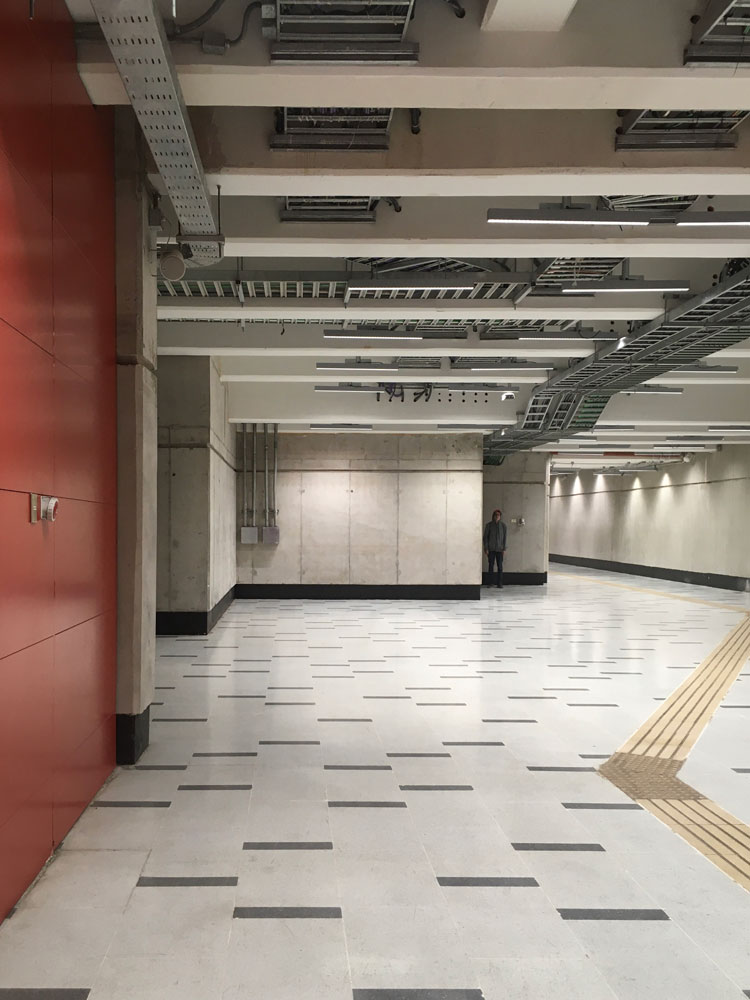

February, 2020

El pulso que nos llama
Produced by Matías Serrano in 2019
Performed at the Asimtria 15 – Pumpumyachkan event in 2020, in Ayacucho, Peru
Photo at Universidad de Chile metro station by Bárbara Molina
"El pulso que nos llama" is a composition based on the soundscape of the platforms at Santiago's main metro station, Baquedano, located beneath what is now called Plaza de la Dignidad. The soundscape that serves as the basis for the work was recorded two weeks before the social uprising of October 18 in Chile, after which this architectural structure was kept closed to passengers, also serving as a barracks for the repressive apparatus and used as a torture center in the early days of the movement.
Originally, my idea was to build an ambient album based on the soundscapes of the metro, alluding to the fact that in my childhood, in the 1990s, Santiago's metro played ambient music for passengers — a practice that was discontinued. According to people I asked, no one remembers the metro having this kind of music, nor does anyone know when it stopped, and since the metro is a private company, accessing that information is not straightforward. By the time I was producing the album, the metro had been a collapsed space for nearly 15 years due to the enormous passenger flow generated by the new public transport system, so that industrial landscape with ambient music, stored in my imagination, is something that can only be imagined and constructed, not revisited. I set aside the idea of publishing this album for now, since the mass fare evasions at the metro were the trigger of the social uprising that occurred in Chile and still runs through us — preferring to keep distance from a topic still so sensitive for most people living in Chile. The soundscape was recorded with a Zoom h2n, and the sonic elements built from sounds of a Casio Tone-bank MA-120.
+info on the event at the website.
Listen on Youtube